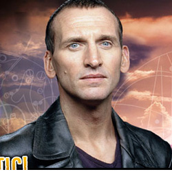

| Home | The Doctors | The Companions | The Villians |
|
|||
The Doctors
|
The Ninth Doctor On 2 April 2004, it was announced that Eccleston was to play the ninth incarnation of the Doctor in the revival of the BBC science fiction television series Doctor Who, which began transmission on 26 March 2005. Eccleston was the first actor to play the role who was born after the series began, albeit by less than three months. On 30 March 2005, the BBC released a statement, ostensibly from Eccleston, saying that he had decided to leave the role after just one series, because he feared becoming typecast. On 4 April 2005, the BBC revealed that Eccleston's "statement" was falsely attributed and released without his consent. The BBC admitted that they had broken an agreement made in January not to disclose publicly that he only intended to do one series. The statement had been made after journalists made queries to the press office.[12] On 11 June 2005, during a BBC radio interview, when asked if he had enjoyed working on Doctor Who, Eccleston responded by saying, "Mixed, but that's a long story." Eccleston's reasons for leaving the role continue to be debated in Britain's newspapers: on 4 October 2005 Alan Davies told The Daily Telegraph that Eccleston had been "overworked" by the BBC, and had left the role because he was "exhausted".[13] In a 2010 interview, Eccleston revealed that he left the show because he "didn't enjoy the environment and the culture that the cast and crew had to work in", but that he was proud of having played the role.[14] Eccleston at the National Theatre, London, May 2012 On 7 November 2008, at the National Theatre to promote his book The Writer's Tale, Russell T. Davies said that Eccleston's contract was for a single year because it was uncertain whether the show would continue beyond a single revival series. In retrospect, he says, it has been an enormous success, but at the time there were doubts within the BBC. Eccleston was voted "Most Popular Actor" at the 2005 National Television Awards for his portrayal of the Doctor. In July 2012, Eccleston spoke positively of his time on Doctor Who during a talk at the National Theatre.[15] This led to speculation he was considering making a return appearance as the Ninth Doctor for the show's 50th anniversary special, "The Day of the Doctor", in 2013. The 11th Doctor, Matt Smith, stated that he would love Eccleston to return.[16] However, after discussing with executive producer Steven Moffat, Eccleston declined his role.[17] |